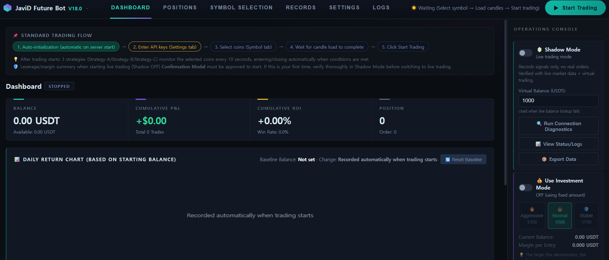
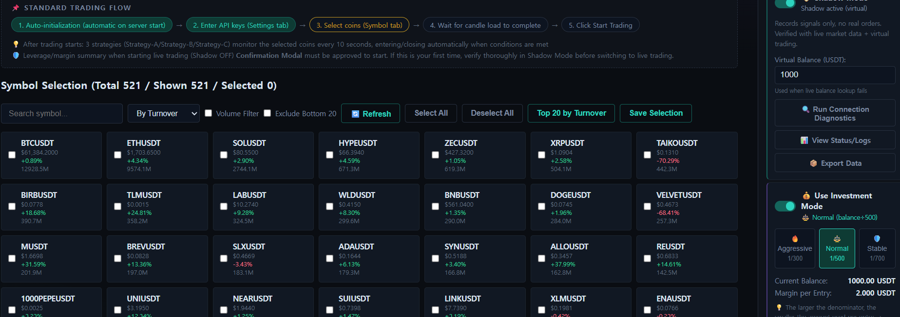

First-Launch Onboarding
Double-click start.bat. Dependencies install automatically on first run, then your dashboard opens in the browser, ready to configure. No coding knowledge required.

Main Dashboard
Balance, cumulative P&L, win rate, and open positions — all visible at a glance, updating live as the bot runs.

Investment Mode
Aggressive, Normal, or Stable — pick how much of your balance each entry risks. The bot adapts to you, not the other way around.

Symbol Selection
Pick your own coins, or hit "Top 20 by Turnover" once and you're done. Track positions across dozens of pairs simultaneously.

Shadow Mode, Running Live
Every strategy trades against live market data with a virtual balance — real signals, real timing, zero real orders. Watch it work for as long as you need before a single real dollar is on the line.